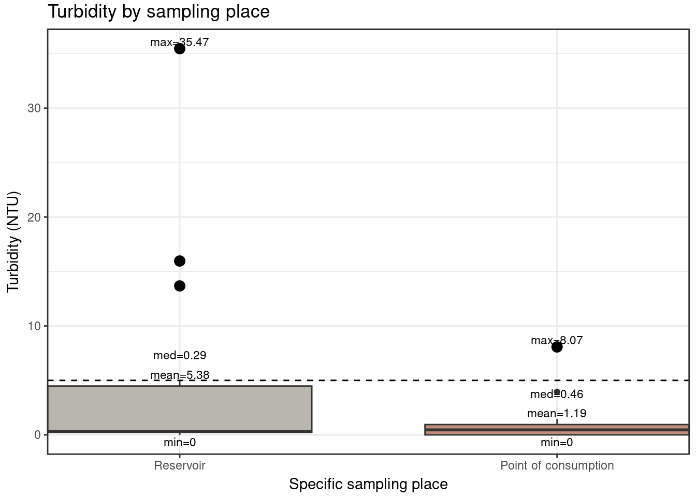
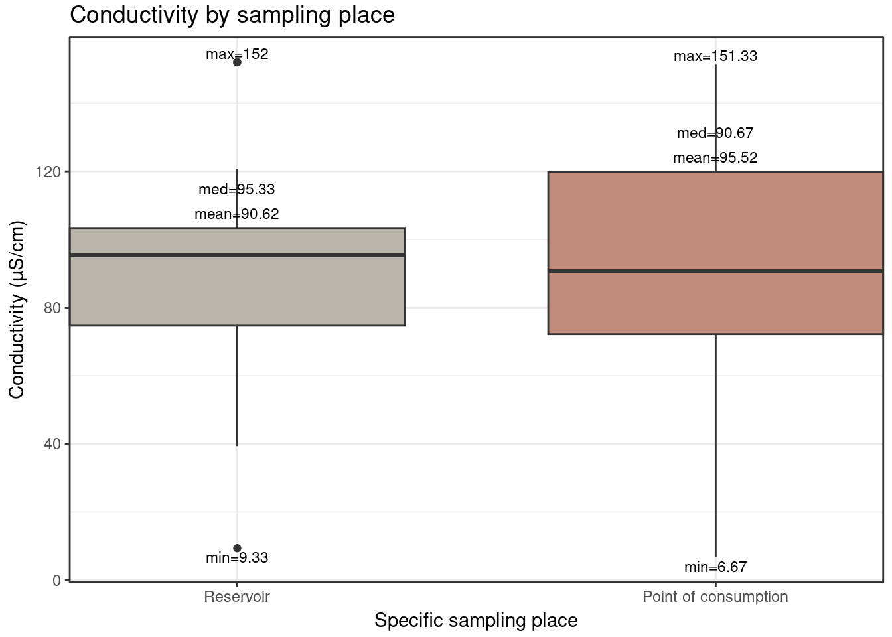

![]()
#Item 20Capstone Project - rafaellabaracho
1 Introduction
Safe water supply and sanitation are fundamental to hygiene, food security, and human dignity, yet rural areas in Brazil still face major deficits in access to these services. Beyond infrastructure gaps, the absence of water quality monitoring, combined with hygiene practices, cultural habits, and the management of household systems, can generate sanitary insecurity ( Al-Mekhlafi (2017), String and Lantagne (2016) ). Rainwater harvesting is crucial in semi-arid regions ( Hassan, Mahdi, and Kadhim (2025) ), but household treatment and maintenance remain essential. This study compares turbidity, electrical conductivity and pH in cisterns and points of consumption and evaluates household water practices.
2 Methods
2.1 The community
The rural community selected is Itapicuru Community, in Xique-Xique, Bahia, which does not have a collective water supply system. The community has 18 households, 16 of which are occupied by families.
2.2 Statistical treatment
Minimum sample size with 95% confidence intervals was calculated following Scalize et al. (2022) .
In the calculations, “p” was defined as 0.5, representing maximum variability for proportion estimates, since these values are widely used by Scalize et al. (2022) in rural areas. Subsequently, water samples for human consumption were collected and their physical-chemical analysis was performed, according to procedures established by Saúde (2021) and Organization (2022) . For 14 household, two 1-liter samples were collected: one from the water storage reservoir (rainwater cistern, water tank, among others) and one from the point of consumption for direct ingestion (water bottle, filter, among others). pH, turbidity, and electrical conductivity were analyzed in triplicate. Finally, a survey was applied to 16 household, to understand household treatment practices.
#Itens 17, 18 and 19
library(readr)
library(here)
library(dplyr)
water_qual_xx <- read_delim(
here::here("data", "raw", "water_quality_data_xx_final.csv"),
delim = ";",
locale = locale(decimal_mark = ".", grouping_mark = ",")
)
water_qual_xx <- water_qual_xx[ rowSums(is.na(water_qual_xx)) < ncol(water_qual_xx), ]
water_qual_xx_proc <- water_qual_xx |>
select(-`Owner name`)
write_delim(
water_qual_xx_proc,
here::here("data", "processed", "water_quality_data_xx_final_processed.csv"),
delim = ";"
)3 Results
In this community, 62.5% of households use rainwater as their main source, 6.2% bottled water, 18.75% water delivered by tanker truck and 12.5% river water, which overall suggests that, for these parameters, drinking-water quality is generally close to safe levels. It is worth highlighting that rainwater is often a relatively good-quality and usually safe source in semi-arid regions when adequately collected and stored.
#Bsic statistics
library(dplyr)
library(writexl)
library(ggplot2)
library(readr)
library(gt)
water_qual_xx_final <- water_qual_xx_proc |>
rename(
Sample = `Sample - 24/05/2025`,
Specific_sampling_place = `Specific sampling place`,
Conductivity1 = `Conductivity 1`,
Conductivity2 = `Conductivity 2`,
Conductivity3 = `Conductivity 3`
) |>
mutate(
Specific_sampling_place = factor(
Specific_sampling_place,
levels = c("Reservoir", "Point of consumption")
),
pH_final = rowMeans(across(c(pH1, pH2, pH3)), na.rm = TRUE),
Conductivity_final = rowMeans(across(c(Conductivity1, Conductivity2, Conductivity3)), na.rm = TRUE),
Turbidity_final = rowMeans(across(c(Turbidity1, Turbidity2, Turbidity3)), na.rm = TRUE)
)
desc_stats <- water_qual_xx_final |>
group_by(Specific_sampling_place) |>
summarise(
n_pH = sum(!is.na(pH_final)),
mean_pH = mean(pH_final, na.rm = TRUE),
sd_pH = sd(pH_final, na.rm = TRUE),
median_pH = median(pH_final, na.rm = TRUE),
IQR_pH = IQR(pH_final, na.rm = TRUE),
min_pH = min(pH_final, na.rm = TRUE),
max_pH = max(pH_final, na.rm = TRUE),
n_Cond = sum(!is.na(Conductivity_final)),
mean_Cond = mean(Conductivity_final, na.rm = TRUE),
sd_Cond = sd(Conductivity_final, na.rm = TRUE),
median_Cond = median(Conductivity_final, na.rm = TRUE),
IQR_Cond = IQR(Conductivity_final, na.rm = TRUE),
min_Cond = min(Conductivity_final, na.rm = TRUE),
max_Cond = max(Conductivity_final, na.rm = TRUE),
n_Turb = sum(!is.na(Turbidity_final)),
mean_Turb = mean(Turbidity_final, na.rm = TRUE),
sd_Turb = sd(Turbidity_final, na.rm = TRUE),
median_Turb = median(Turbidity_final, na.rm = TRUE),
IQR_Turb = IQR(Turbidity_final, na.rm = TRUE),
min_Turb = min(Turbidity_final, na.rm = TRUE),
max_Turb = max(Turbidity_final, na.rm = TRUE)
)
# View in R
desc_stats# A tibble: 2 × 22
Specific_sampling_place n_pH mean_pH sd_pH median_pH IQR_pH min_pH max_pH
<fct> <int> <dbl> <dbl> <dbl> <dbl> <dbl> <dbl>
1 Reservoir 14 6.88 0.356 6.90 0.167 5.98 7.61
2 Point of consumption 14 6.77 0.296 6.78 0.194 6.06 7.22
# ℹ 14 more variables: n_Cond <int>, mean_Cond <dbl>, sd_Cond <dbl>,
# median_Cond <dbl>, IQR_Cond <dbl>, min_Cond <dbl>, max_Cond <dbl>,
# n_Turb <int>, mean_Turb <dbl>, sd_Turb <dbl>, median_Turb <dbl>,
# IQR_Turb <dbl>, min_Turb <dbl>, max_Turb <dbl># Save table to Excel
write_xlsx(desc_stats, "desc_stats_water_quality.xlsx")
library(dplyr)
library(gt)
tab_pH <- desc_stats |>
transmute(
Parameter = "pH",
Location = Specific_sampling_place,
`Mean (SD)` = sprintf("%.2f (%.2f)", mean_pH, sd_pH),
`Median (IQR)` = sprintf("%.2f (%.2f)", median_pH, IQR_pH),
`Min–Max` = sprintf("%.2f–%.2f", min_pH, max_pH)
)
tab_cond <- desc_stats |>
transmute(
Parameter = "Electrical Conductivity (µS/cm)",
Location = Specific_sampling_place,
`Mean (SD)` = sprintf("%.2f (%.2f)", mean_Cond, sd_Cond),
`Median (IQR)` = sprintf("%.2f (%.2f)", median_Cond, IQR_Cond),
`Min–Max` = sprintf("%.2f–%.2f", min_Cond, max_Cond)
)
tab_turb <- desc_stats |>
transmute(
Parameter = "Turbidity (NTU)",
Location = Specific_sampling_place,
`Mean (SD)` = sprintf("%.2f (%.2f)", mean_Turb, sd_Turb),
`Median (IQR)` = sprintf("%.2f (%.2f)", median_Turb, IQR_Turb),
`Min–Max` = sprintf("%.2f–%.2f", min_Turb, max_Turb)
)
table_for_gt <- bind_rows(tab_pH, tab_cond, tab_turb)
table_for_gt |>
gt(groupname_col = "Parameter") |>
tab_header(
title = "Table 1 - Descriptive statistics of water quality parameters at household reservoirs and points of consumption",
subtitle = "Itapicuru, Xique-Xique, Brazil"
) |>
cols_label(
Location = "Location",
`Mean (SD)` = "Mean (SD)",
`Median (IQR)` = "Median (IQR)",
`Min–Max` = "Min–Max",
Parameter = "Parameter (unit)"
)| Table 1 - Descriptive statistics of water quality parameters at household reservoirs and points of consumption | |||
| Itapicuru, Xique-Xique, Brazil | |||
| Location | Mean (SD) | Median (IQR) | Min–Max |
|---|---|---|---|
| pH | |||
| Reservoir | 6.88 (0.36) | 6.90 (0.17) | 5.98–7.61 |
| Point of consumption | 6.77 (0.30) | 6.78 (0.19) | 6.06–7.22 |
| Electrical Conductivity (µS/cm) | |||
| Reservoir | 90.62 (38.63) | 95.33 (28.67) | 9.33–152.00 |
| Point of consumption | 95.52 (39.36) | 90.67 (47.67) | 6.67–151.33 |
| Turbidity (NTU) | |||
| Reservoir | 5.38 (10.11) | 0.29 (4.24) | 0.00–35.47 |
| Point of consumption | 1.19 (2.24) | 0.46 (0.95) | 0.00–8.07 |
The results regarding the basic statistics are shown in Table 1 . These results shown the general status of water quality. Mean values of pH, electrical conductivity and turbidity complied with Saúde (2021) and Organization (2022) drinking-water recommendations at both sampling points (reservoir and point of consumption), except for turbidity at the reservoir. Although pH and electrical conductivity are not usually of direct health concern, they remain important operational parameters for monitoring and system control Ramos - Parra et al. (2025) . In this community, different household water-treatment practices are used: 43.7% of households reported filtering their water, and 81.2% reported switching from rainwater to water delivered by tanker truck during the dry season. Following, the results for each parameter will be presented in box plots.
#all statistic for all box plots, before plotting
## Color palette
pal_sampling <- c(
"Reservoir" = "#B9B6AD",
"Point of consumption" = "#C28C7A"
)
make_stats <- function(df, var, group) {
df |>
group_by({{ group }}) |>
summarise(
min = min({{ var }}, na.rm = TRUE),
median = median({{ var }}, na.rm = TRUE),
mean = mean({{ var }}, na.rm = TRUE),
max = max({{ var }}, na.rm = TRUE),
Q1 = quantile({{ var }}, 0.25, na.rm = TRUE),
Q3 = quantile({{ var }}, 0.75, na.rm = TRUE),
.groups = "drop"
)
}
ph_stats <- make_stats(water_qual_xx_final, pH_final, Specific_sampling_place)
turb_stats <- make_stats(water_qual_xx_final, Turbidity_final, Specific_sampling_place)
cond_stats <- make_stats(water_qual_xx_final, Conductivity_final, Specific_sampling_place)
ph_range <- diff(range(water_qual_xx_final$pH_final, na.rm = TRUE))
turb_range <- diff(range(water_qual_xx_final$Turbidity_final, na.rm = TRUE))
cond_range <- diff(range(water_qual_xx_final$Conductivity_final, na.rm = TRUE))
ph_stats <- ph_stats |>
mutate(
mean_y = Q3 + 0.03 * ph_range,
median_y = Q3 + 0.08 * ph_range
)
turb_stats <- turb_stats |>
mutate(
mean_y = Q3 + 0.03 * turb_range,
median_y = Q3 + 0.08 * turb_range
)
cond_stats <- cond_stats |>
mutate(
mean_y = Q3 + 0.03 * cond_range,
median_y = Q3 + 0.08 * cond_range
)
#colors and sizes, already tested
box_width <- 0.70
base_theme <- theme_bw() +
theme(
legend.position = "none",
plot.margin = margin(3, 5, 3, 5),
axis.title.x = element_text(margin = margin(t = 4)),
axis.title.y = element_text(margin = margin(r = 4))
)At Figure 1, for pH, the mean and median values at the two sampling locations were very similar, indicating that there was no relevant change in pH along the path from the reservoir to the point of consumption.
## pH
p_box_pH_labels <- ggplot(
water_qual_xx_final,
aes(x = Specific_sampling_place,
y = pH_final,
fill = Specific_sampling_place)
) +
geom_boxplot(width = box_width) +
scale_fill_manual(values = pal_sampling) +
scale_x_discrete(expand = expansion(mult = c(0, 0))) +
# max
geom_text(
data = ph_stats,
aes(y = max, label = paste0("max=", round(max, 2))),
vjust = -0.3, size = 3
) +
# min
geom_text(
data = ph_stats,
aes(y = min, label = paste0("min=", round(min, 2))),
vjust = 1.3, size = 3
) +
# median (outside box)
geom_text(
data = ph_stats,
aes(y = median_y, label = paste0("med=", round(median, 2))),
size = 3
) +
# mean (outside box)
geom_text(
data = ph_stats,
aes(y = mean_y, label = paste0("mean=", round(mean, 2))),
size = 3
) +
labs(
x = "Specific sampling place",
y = "pH",
title = "pH by sampling place"
) +
coord_cartesian(clip = "off") +
base_theme
p_box_pH_labels
For turbidity, the box plots at Figure 2 show that variability in the samples collected at the point of consumption was lower than in the reservoir. Processes such as sedimentation and filtration may account for this difference, since the community adopts these practices for household water treatment.
## turb
p_box_turb_labels <- ggplot(
water_qual_xx_final,
aes(x = Specific_sampling_place,
y = Turbidity_final,
fill = Specific_sampling_place)
) +
geom_boxplot(width = box_width) +
scale_fill_manual(values = pal_sampling) +
scale_x_discrete(expand = expansion(mult = c(0, 0))) +
geom_hline(
yintercept = 5,
linetype = "dashed"
) +
# highlight points > 5
geom_point(
data = subset(water_qual_xx_final, Turbidity_final > 5),
aes(x = Specific_sampling_place, y = Turbidity_final),
inherit.aes = FALSE,
size = 3.2
) +
# max
geom_text(
data = turb_stats,
aes(y = max, label = paste0("max=", round(max, 2))),
vjust = -0.3, size = 3
) +
# min
geom_text(
data = turb_stats,
aes(y = min, label = paste0("min=", round(min, 2))),
vjust = 1.3, size = 3
) +
# median (outside box)
geom_text(
data = turb_stats,
aes(y = median_y, label = paste0("med=", round(median, 2))),
size = 3
) +
# mean (outside box)
geom_text(
data = turb_stats,
aes(y = mean_y, label = paste0("mean=", round(mean, 2))),
size = 3
) +
labs(
x = "Specific sampling place",
y = "Turbidity (NTU)",
title = "Turbidity by sampling place"
) +
coord_cartesian(clip = "off") +
base_theme
p_box_turb_labels

Finally, for conductivity, Figure 3, the variation at the point of consumption is slightly higher; however, the mean and median values are similar, suggesting that there is no substantial change, which could otherwise occur, for example, due to the addition of contaminants.
## Conductivity boxplot
p_box_cond_labels <- ggplot(
water_qual_xx_final,
aes(x = Specific_sampling_place,
y = Conductivity_final,
fill = Specific_sampling_place)
) +
geom_boxplot(width = box_width) +
scale_fill_manual(values = pal_sampling) +
scale_x_discrete(expand = expansion(mult = c(0, 0))) +
# max
geom_text(
data = cond_stats,
aes(y = max, label = paste0("max=", round(max, 2))),
vjust = -0.3, size = 3
) +
# min
geom_text(
data = cond_stats,
aes(y = min, label = paste0("min=", round(min, 2))),
vjust = 1.3, size = 3
) +
# median (outside box)
geom_text(
data = cond_stats,
aes(y = median_y, label = paste0("med=", round(median, 2))),
size = 3
) +
# mean (outside box)
geom_text(
data = cond_stats,
aes(y = mean_y, label = paste0("mean=", round(mean, 2))),
size = 3
) +
labs(
x = "Specific sampling place",
y = "Conductivity (µS/cm)",
title = "Conductivity by sampling place"
) +
coord_cartesian(clip = "off") +
base_theme
p_box_cond_labels

All the results are better than in Ramos - Parra et al. (2025), suggesting that the rainwater is a safe water source, from the point of view of these parameters.
4 Conclusions
These results indicate no differences between water from the reservoir and from the point of consumption, but it´s still worthy apply Shapiro-Wilk tests.
Even though the measured parameters generally comply with standards, it is important to note that the community mainly relies on rainwater and switches to tanker-truck water during drought periods.
Since the household treatment methods did not produce detectable changes in pH, electrical conductivity or turbidity, targeted actions are needed to strengthen and ensure the correct application of treatment techniques.
5 Disclaimer
Disclaimer to follow General Data Protection Regulation instructions:
ChatGPT (OpenAI) was used to assist with coding scripts and improving language clarity. The author retain responsibility for checking and validating all outputs.
6 References
Al-Mekhlafi, Hesham M. 2017. “Giardia Duodenalis Infection Among Rural Communities in Yemen: A Community-Based Assessment of the Prevalence and Associated Risk Factors.” Asian Pacific Journal of Tropical Medicine 10 (10): 987–95. https://doi.org/10.1016/j.apjtm.2017.09.011.
Hassan, Waqed H., Karrar Mahdi, and Zahraa K. Kadhim. 2025. “Correction: GIS-Based Multi-Criteria Decision Making for Identifying Rainwater Harvesting Sites.” Applied Water Science 15 (6): 131. https://doi.org/10.1007/s13201-025-02468-4.
Organization, World Health. 2022. Guidelines for Drinking-Water Quality: Fourth Edition Incorporating the First and Second Addenda. World Health Organization.
Ramos - Parra, Yadi Johaira, Jaime Díaz - Gómez, Andrés Suarez - Escobar, Zilpa Adriana Sánchez – Quitian, Sandra Helena Suescún - Carrero, Nohora Yaneth Zipa - Casas, and Mabel Medina - Alfonso. 2025. “Risk Assessment of the Drinking Water Supply and Distribution System in Rural Areas in Boyacá - Colombia Using Water Safety Plans.” Case Studies in Chemical and Environmental Engineering 11 (June): 101169. https://doi.org/10.1016/j.cscee.2025.101169.
Saúde, Ministério da. 2021. PORTARIA GM/MS Nº 888, DE 4 DE MAIO DE 2021. Brasília: Diário Oficial da União. https://bvsms.saude.gov.br/bvs/saudelegis/gm/2021/prt0888_07_05_2021.html.
Scalize, Paulo Sergio, Ellen Flavia Moreira Gabriel, Poliana Nascimento Arruda, Luisa Rodrigo Fernandes Baumann, and Nolan Ribeiro Bezerra. 2022. Diagnóstico Técnico Da Qualidade Da Água de Comunidades Rurais e Tradicionais Do Estado de Goiás - 2019 [E-Book]. Goiânia: Cegraf UFG. https://files.cercomp.ufg.br/weby/up/688/o/Livro_DTQA_30_06_23.pdf.
String, Gabrielle, and Daniele Lantagne. 2016. “A Systematic Review of Outcomes and Lessons Learned from General, Rural, and Country-Specific Water Safety Plan Implementations.” Water Supply 16 (6): 1580–94. https://doi.org/10.2166/ws.2016.073.